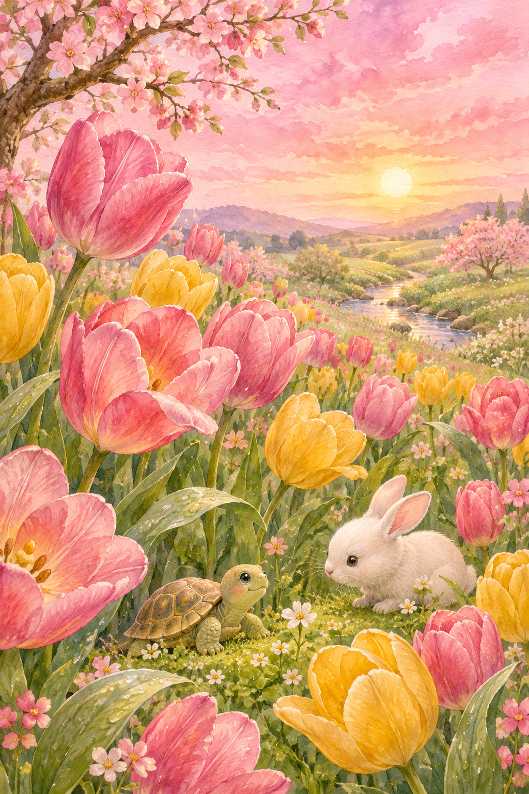

A LITTLE SOMETHING FOR MISS NURSE
♡
For you, Miss Nurse.
A little garden, a little magic, and a whole lot of appreciation — just for you.
Step into your garden ↓
A NOTE FROM MY HEART
Across the distance,
you make me smile.
✿ ♡ ✿
Dear Miss Nurse,
It still feels special that, in a world this big, we found our way to each other online. Even though we haven’t met in person yet, getting to know you has given me something to smile about.
I love learning the little things about you, hearing your thoughts, and looking forward to our conversations. Thank you for letting me be a part of your world, even from far away.
I don’t know exactly what the future holds, but I’m grateful for what we have and excited for all the things we have yet to discover. Until then, here’s a little garden and a few fireworks, just for you. ♡
With love ♡